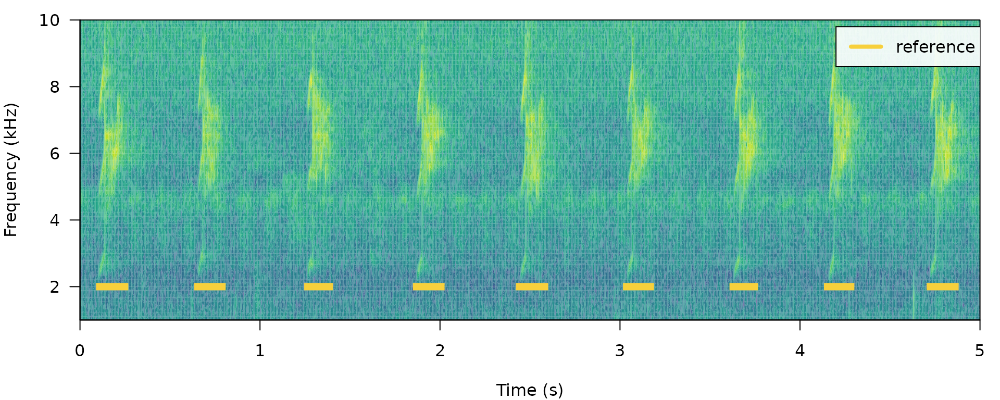
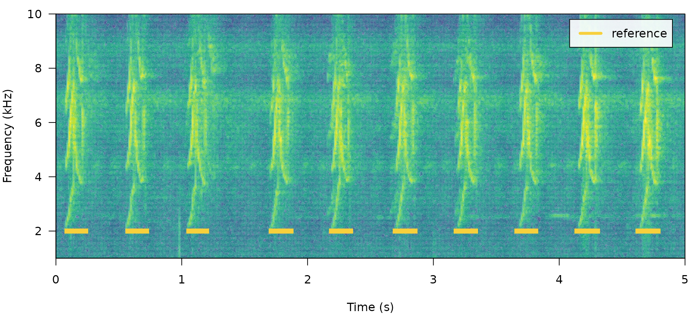
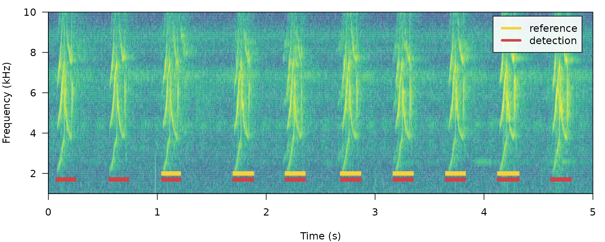
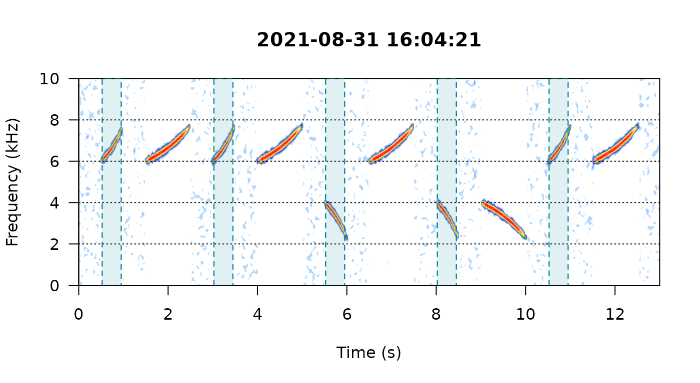
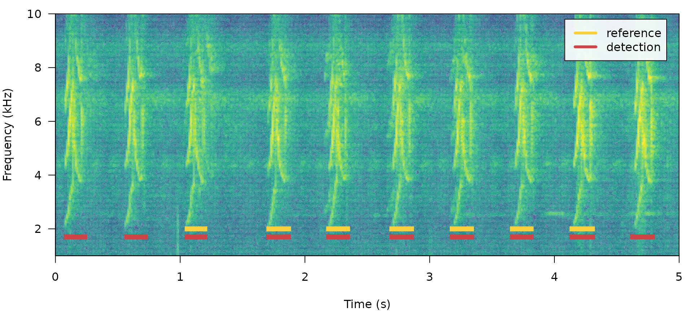
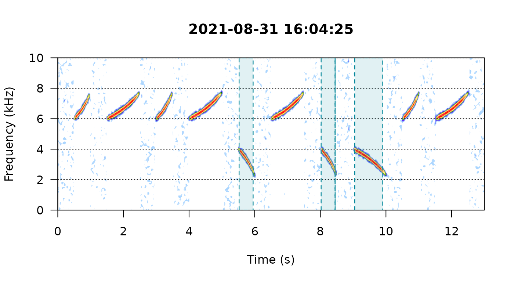

vignettes/ohun.Rmd
ohun.Rmd
ohun is intended to facilitate the automatic detection of acoustic signals, providing functions to diagnose and optimize detection routines. Detections from other software can also be explored and optimized.
The main features of the package are:
The package offers functions for:
All functions allow the parallelization of tasks, which distributes the tasks among several processors to improve computational efficiency. The package works on sound files in ‘.wav’, ‘.mp3’, ‘.flac’ and ‘.wac’ format.
To install the latest developmental version from github you will need the R package devtools:
# install pacakge
devtools::install_github("maRce10/ohun")
#load package
library(ohun)
It uses amplitude envelopes to infer the position of signals. These detectors don’t require highly stereotyped signals, although they work better on high quality recordings in which the amplitude of target signals is higher than the background noise (i.e. high signal-to-noise ratio). The function ernergy_detector() performs this type of detection. The syntax package.name::function.name() will be used here and throughout the vignette to highlight functions coming from packages other than ohun,
We can understand how to use ernergy_detector() using simulating animal signals. We will do that using the function simulate_songs() from warbleR. In this example we simulate a recording with 10 sounds with 2 different frequency ranges and durations:
# install this package first if not available
# install.packages(" Sim.DiffProc")
#Creating vector for duration
durs <- rep(c(0.5, 1), 5)
#Creating simulated song
set.seed(10)
ss1 <- warbleR::simulate_songs(n = 10, durs = durs, freqs = 5, sig2 = 0.01, gaps = 0.5, selec.table = TRUE, file.name = "ss1", harms = 1, bgn = 0.1, path = tempdir())
This is how the simulated recording looks like:
# plot spectrogram
seewave::spectro(ss1$wave, osc = FALSE, scale = FALSE, collevels = seq(-45, 0, 5), fastdisp = TRUE, flim = c(0, 10), grid = FALSE)
The signals in that recording can be detected using ernergy_detector() as follows:
#Detecting all elements
sim_ad <- energy_detector(files = ss1$selec.table$sound.files[1], bp = c(1, 8), ssmooth = 10, threshold = 0.5, min.duration = 0.001, path = tempdir(), pb = FALSE)
# plot spectro
seewave::spectro(ss1$wave, osc = FALSE, scale = FALSE, collevels = seq(-45, 0, 5), fastdisp = TRUE, flim = c(0, 10))
# plot detections
for(e in 1:nrow(sim_ad))
polygon(x = rep(c(sim_ad$start[e], sim_ad$end[e]),
each = 2), y = c(0, 10, 10, 0), lty = 2, border = "#07889B",
col = adjustcolor("#07889B", alpha.f = 0.12),
lwd = 1.2)
Now we will make use of some additional arguments to filter out specific signals based on their structural features. For instance we can use the argument minimum.duration to exclude short signals and keep only the longest signals:
#Detecting all elements
sim_ad <- energy_detector(files = ss1$selec.table$sound.files[1], bp = c(1, 8), ssmooth = 10, threshold = 0.5, min.duration = 0.6, path = tempdir(), pb = FALSE)
# plot spectrogram
seewave::spectro(ss1$wave, osc = FALSE, scale = FALSE, collevels = seq(-50, 0, 5), fastdisp = TRUE, flim = c(0, 10))
# plot detections
for(e in 1:nrow(sim_ad))
polygon(x = rep(c(sim_ad$start[e], sim_ad$end[e]),
each = 2), y = c(0, 10, 10, 0), lty = 2, border = "#07889B",
col = adjustcolor("#07889B", alpha.f = 0.12),
lwd = 1.2)
We can use the argument max.duration to exclude long signals and keep the short signals:
#Detecting all elements
sim_ad <- energy_detector(files = ss1$selec.table$sound.files[1], bp = c(1, 8), ssmooth = 10, threshold = 0.5, min.duration = 0.001, max.duration = 0.6, path = tempdir(), pb = FALSE)
# plot spectrogram
seewave::spectro(ss1$wave, osc = FALSE, scale = FALSE, main = Sys.time(), collevels = seq(-50, 0, 5), fastdisp = TRUE, flim = c(0, 10))
# plot detections
for(e in 1:nrow(sim_ad))
polygon(x = rep(c(sim_ad$start[e], sim_ad$end[e]),
each = 2), y = c(0, 10, 10, 0), lty = 2, border = "#07889B",
col = adjustcolor("#07889B", alpha.f = 0.12),
lwd = 1.2)
We can also focus the detection on specific frequency ranges using the argument bp (bandpass). By setting bp = c(5, 8)we can detect those signals found within that frequency range (5-8 kHz), which excludes signals below 5 kHz:
#Detecting all elements
sim_ad <- energy_detector(files = ss1$selec.table$sound.files[1], bp = c(5, 8), ssmooth = 10, threshold = 0.5, min.duration = 0.0001, path = tempdir(), pb = FALSE)
# plot spectrogram
spectro(ss1$wave, osc = FALSE, scale = FALSE, main = Sys.time(), collevels = seq(-50, 0, 5), fastdisp = TRUE, flim = c(0, 10))
# plot detections
for(e in 1:nrow(sim_ad))
polygon(x = rep(c(sim_ad$start[e], sim_ad$end[e]),
each = 2), y = c(0, 10, 10, 0), lty = 2, border = "#07889B",
col = adjustcolor("#07889B", alpha.f = 0.12),
lwd = 1.2)
The same logic can be applied to detect those signals found below 5 kHz. We just need to set bp = (0, 6):
#Detecting all elements
sim_ad <- energy_detector(files = ss1$selec.table$sound.files[1], bp = c(0, 6), ssmooth = 10, threshold = 0.5, min.duration = 0.0001, path = tempdir(), pb = FALSE)
# plot spectrogram
spectro(ss1$wave, osc = FALSE, scale = FALSE, main = Sys.time(), collevels = seq(-50, 0, 5), fastdisp = TRUE, flim = c(0, 10))
# plot detections
for(e in 1:nrow(sim_ad))
polygon(x = rep(c(sim_ad$start[e], sim_ad$end[e]),
each = 2), y = c(0, 10, 10, 0), lty = 2, border = "#07889B",
col = adjustcolor("#07889B", alpha.f = 0.12),
lwd = 1.2)
Amplitude modulatio (variation in amplitude across a signal) can be problematic for detection based on amplitude envelopes. We can also simulate some amplitude modulation using warbleR::simulate_songs():
#Creating simulated song
set.seed(10)
ss2 <- warbleR::simulate_songs(n = 10, durs = durs, freqs = 5, sig2 = 0.01, gaps = 0.5, selec.table = TRUE, file.name = "ss1", harms = 1, bgn = 0.1, path = tempdir(), steps = 10, am.amps = c(1, 2, 3, 2, 0.1, 2, 3, 3, 2, 1))
spectro(ss2$wave, osc = TRUE, scale = FALSE, collevels = seq(-50, 0, 5), fastdisp = TRUE, flim = c(0, 10), heights = c(2, 1))
When signals have strong amplitude modulation they can be split during detection:
# detect sounds
sim_ad <- auto_detec(flist = ss2$selec.table$sound.files[1], bp = c(1, 8), ssmooth = 400, threshold = 50, mindur = 0.001, path = tempdir())
spectro(ss2$wave, osc = TRUE, scale = FALSE, collevels = seq(-50, 0, 5), fastdisp = TRUE, flim = c(0, 10), heights = c(2, 1))
# plot detection
for(e in 1:nrow(sim_ad))
polygon(x = rep(c(sim_ad$start[e], sim_ad$end[e]),
each = 2), y = c(0, 10, 10, 0), lty = 2, border = "#07889B",
col = adjustcolor("#07889B", alpha.f = 0.12),
lwd = 1.2)
Use the argument holdtime to merge selections from the same signal
Try increasing ssmooth to merge selections from the same signal (do not use holdtime)
Please cite ohun as follows:
Araya-Salas, M. (2020), ohun: automatic detection of acoustic signals. R package version 0.1.0.
UNDER DEVELOPMENT
Observaciones:
avoid having overlapping selections in reference (check with overlapping_sels())
downsample to a freq range just enough for the signals of interest
use hop.size instead of wl
after split_sound_files() another function that returns the position in the original unsplit sound file
count number of detections per unit of time
Session information
## R version 4.1.0 (2021-05-18)
## Platform: x86_64-pc-linux-gnu (64-bit)
## Running under: Ubuntu 20.04.2 LTS
##
## Matrix products: default
## BLAS: /usr/lib/x86_64-linux-gnu/atlas/libblas.so.3.10.3
## LAPACK: /usr/lib/x86_64-linux-gnu/atlas/liblapack.so.3.10.3
##
## locale:
## [1] LC_CTYPE=pt_BR.UTF-8 LC_NUMERIC=C
## [3] LC_TIME=es_CR.UTF-8 LC_COLLATE=pt_BR.UTF-8
## [5] LC_MONETARY=es_CR.UTF-8 LC_MESSAGES=pt_BR.UTF-8
## [7] LC_PAPER=es_CR.UTF-8 LC_NAME=C
## [9] LC_ADDRESS=C LC_TELEPHONE=C
## [11] LC_MEASUREMENT=es_CR.UTF-8 LC_IDENTIFICATION=C
##
## attached base packages:
## [1] stats graphics grDevices utils datasets methods base
##
## other attached packages:
## [1] ohun_0.1.0 warbleR_1.1.27 NatureSounds_1.0.4 knitr_1.33
## [5] seewave_2.1.8 tuneR_1.3.3.1
##
## loaded via a namespace (and not attached):
## [1] Rcpp_1.0.7 highr_0.9 bslib_0.2.5.1 compiler_4.1.0
## [5] jquerylib_0.1.4 Sim.DiffProc_4.8 bitops_1.0-7 tools_4.1.0
## [9] digest_0.6.27 jsonlite_1.7.2 evaluate_0.14 memoise_2.0.0
## [13] fftw_1.0-6 rlang_0.4.11 yaml_2.2.1 parallel_4.1.0
## [17] pkgdown_1.6.1 xfun_0.25 fastmap_1.1.0 stringr_1.4.0
## [21] desc_1.3.0 fs_1.5.0 sass_0.4.0 systemfonts_1.0.2
## [25] rprojroot_2.0.2 R6_2.5.0 textshaping_0.3.5 dtw_1.22-3
## [29] pbapply_1.4-3 rmarkdown_2.9 magrittr_2.0.1 htmltools_0.5.1.1
## [33] MASS_7.3-54 Deriv_4.1.3 ragg_1.1.3 proxy_0.4-26
## [37] stringi_1.7.4 signal_0.7-7 RCurl_1.98-1.4 cachem_1.0.5
## [41] crayon_1.4.1 rjson_0.2.20